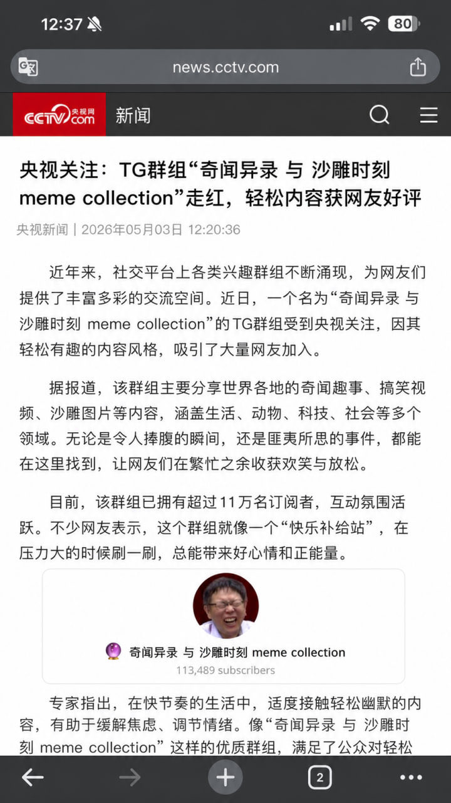

@zhiweiwar 没绑定手机号发不了附注就写在这里了，有权限的小伙伴可以写一下附注
［社群附注］这个图片是AIGC，央视从来没有发布过带有「TG 群组」这样词语的新闻，央视总是称呼为「Telegram」而不是「TG」
根据X 的规则，这类图片应该披露为「AI生成」
Source: https://t.co/40aWHiLbA9
https://t.co/m5YNRX3gG4
［社群附注］这个图片是AIGC，央视从来没有发布过带有「TG 群组」这样词语的新闻，央视总是称呼为「Telegram」而不是「TG」
根据X 的规则，这类图片应该披露为「AI生成」
Source: https://t.co/40aWHiLbA9
https://t.co/m5YNRX3gG4
